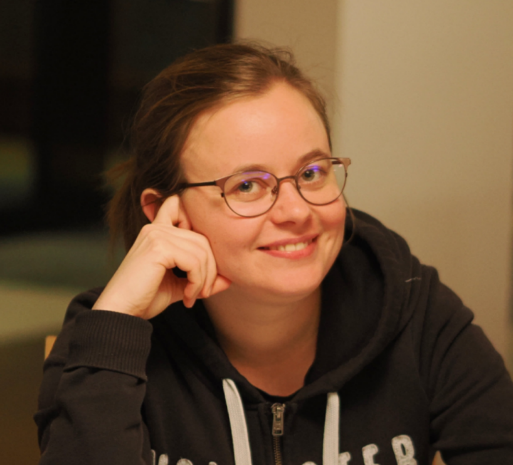

Photo credit: Stefan Friedl.
Photo credit: Stefan Friedl.Hi! My name is Paula Truöl. As of December 2025, I am a postdoctoral fellow at the University of Glasgow, supported by an SNSF Postdoc.Mobility fellowship. Previously, I was a postdoc at the Max Planck Institute for Mathematics in Bonn. Prior to that, I completed my doctoral studies at ETH Zurich.
My research is in low-dimensional topology, especially in knot theory. More specifically, I am interested in knot concordance and four-ball genus, braids, notions of braid positivity, braid groups and Garside structures, knotted surfaces, 3- and 4-manifolds, Khovanov and Heegaard Floer homology. Read more on my research page!
| Email: | paula g truoel (at) gmail . com |
|---|---|
| Pronouns: | she/her |
| Office: | 423 |
| Mailing Adress: |
School of Mathematics & Statistics University of Glasgow University Place Glasgow G12 8QQ United Kingdom |